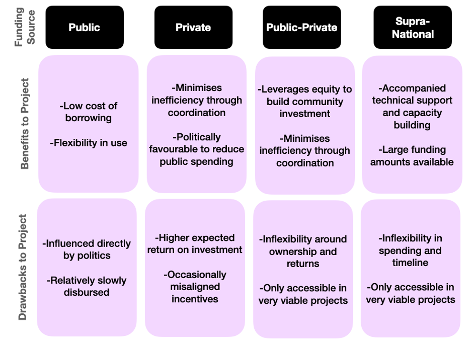
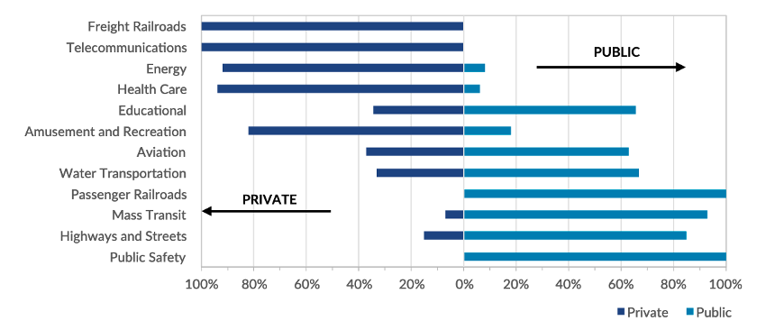
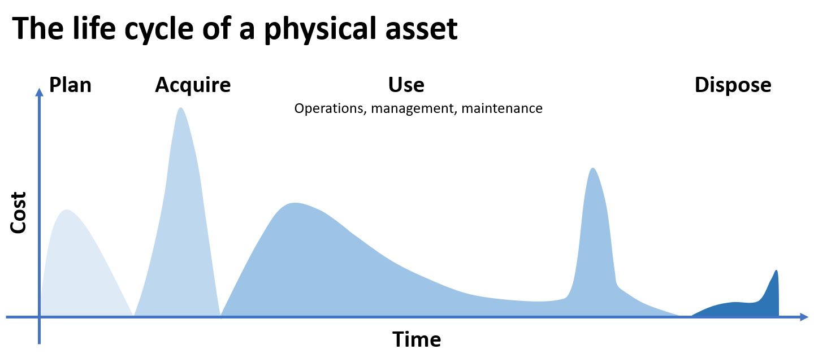

This mini-lecture introduces the different types of infrastructure financing and describes their relative benefits and drawbacks. It goes further to discuss the infrastructure project attributes that attract different types of financing and closes by highlighting how infrastructure financing changes across the lifecycle of an infrastructure project.
Traditional economists are of the opinion that infrastructure is at the core of any economy, as it represents development, critical service for users, and longevity. Its emplacement gives rise to confidence in its people and economic markets, which leads to further investments. At the start of this cycle, and with every new infrastructure project, effective financing is foundational to success.
Infrastructure financing refers to the process of sourcing and attributing funds to pay for infrastructure investments — particularly the upfront costs accrued before the asset begins providing a service. Typically, infrastructure investments have a very high upfront capital cost and in order to mitigate the risk seen by individual investors, financing strategies include a multitude of financial tools, packages, and stakeholders. It is important to note that without securing financing, infrastructure projects cannot progress, and it is not uncommon for well-developed projects to go unfunded for months or even years. Political alignment of projects with policies, goals, and powerful individuals can play an important role in this process. Other components of infrastructure governance, especially around transparency, corruption, procurement, and regulation, greatly influence financing and how effectively funding is used.
This lecture will briefly discuss three important finance concepts, covering the ideas of who finances, why they do so, and when then do so:
Financing for infrastructure projects can arise from any number of sources, with each type having its own benefits and drawbacks (Figure 19.4.1).

Figure 19.4.1: A simplified layout of major funding sources in infrastructure finance and the benefits and drawbacks most often associated with each type of funding. Adapted from Juneja (2015) and Institute for Government (2019)
Public funds are those which are sourced from government entities. This type of funding has a low borrowing rate, as it is collected through taxes and bonds and is spread across a wide payer-base. Collecting new public funding can be a politically delicate process, as oftentimes they require substantive votes from customers to raise their own rates.
Private funders typically hold large amounts of equity and invest to earn sizeable returns over time. A major source of private funding for infrastructure in many financial contexts is insurance firms, which plan to exist over longer timelines and can thus accommodate the slower rates of return accrued across the 30-100 year lifecycles associated with infrastructure assets. Private financing is more common in well-developed financial contexts that demonstrate stability and legal protections for investors. Without guarantees of social and political stability and strong legal protections some developing-nation contexts struggle to incorporate this type of actor into infrastructure financing.
Public-Private-Partnership funding is a relatively new financing strategy which utilises private equity while giving investors part ownership, and even operation, of the built asset. This allows investors to engage in direct cost recuperation while also providing needed infrastructure services for society.
Supra-national funding comes from international entities engaged in providing foreign aid for infrastructure, like loans and grants. Supra-national funding entities (e.g. World Bank, International Monetary Fund, United Nations) are strongly influenced by shifting directives, and due to their bureaucratic nature, require oversight and contractual inflexibility. These funders tend to hold large technical capacity and expertise, and sometimes provide this in lieu of direct financing.
Financiers are motivated to invest in projects that they believe can provide a return on investment. Examining the benefits and customers of infrastructure projects can help us to understand the typology of infrastructure projects and what kinds of financing they might attract. From this perspective, there are three types of infrastructure projects: social, economic, and commercial (Juneja 2015).
Social projects are those that may not see immediate financial returns or have net negative overall costs but are a necessary project benefiting the entire society. These projects rarely have a specific beneficiary and are predominantly financed using public funds. Some examples of these projects include public safety and road infrastructure programmes.
Economic projects are those that have an explicit economic benefit to the market that is shared among society, and between the public and private sector. Private investors can identify the value of this project to their own operations and may choose to invest if it was economically viable. Examples of economic projects are ports and airports that encourage trade.
Commercial projects are similar to economic projects in that they generate net positive economic benefits to stakeholders and the economy, however they also benefit a specific subset of users with their service. With a specific user class to levee fees towards, these projects show the clearest economic returns and thus draw the greatest private investments. Examples of commercial projects include toll roads and metro rail projects. Supra-national financiers tend also to invest in commercially viable projects.

Figure 19.4.2: Proportion of 2014 U.S. public and private spending by infrastructure project type noting commercial projects towards the top and social projects towards the bottom (Chen and Bartle 2017; US Bureau of Economic Analysis 2015)
While the single largest cost of an asset is incurred during its use phase for maintenance and operations (Figure 19.4.3), early project financing in the planning and acquisition phases will impact that project’s entire lifecycle, especially within the first 30 years of operations while revenues are being devoted to paying back financing costs. Large infrastructure assets typically have lifecycles of between 30-100 years, and across this period, different kinds of financing and financiers will be engaged with the project.

Figure 19.4.3: A comparison of the magnitude of costs incurred throughout the lifecycle of a physical infrastructure asset (adapted from Hanif et al. (2021))
In the planning phase, tremendous uncertainty inherent to the project is often too risky to engage public and small-private investors and thus large banks and financial entities are usually the first to commit to financing a project.
Once financing has been secured, the project moves to the Acquisition Phase, which is considered the most high-risk, as project delays are common and unpredictable, and the project can run out of funding. Obtaining new funding in this phase is difficult and they will come with high rates of interest. In this phase, it is difficult for investors to exit the project without taking a financial loss, as the project has yet to begin generating returns.
In the Use Phase, the asset begins generating returns through providing service to customers who pay rates. A portion of this rate revenue is put towards paying back the entities that financed earlier phases of the project. After debt services are fully paid off, capital financing practices have little role to play in the asset’s Disposal Phase.
In this mini-lecture, we learned that infrastructure financing plays a crucial role in providing upfront capital costs for constructing and beginning operations of infrastructure assets. Infrastructure finance strategies include a multitude of financial tools, packages, and stakeholders, but funding sources are typically distinguished into four types: public, private, joint (public-private), and supra-national. Each of these funding sources bring benefits and drawbacks to the projects being funded.
Private investors choose to support infrastructure projects because they are typically seen as having monopolistic markets with few competitors and thus their service is likely stable due to high demand. Payback and returns for infrastructure projects can take place over a long period which is undesirable for some private investors resulting in larger private entities (insurance companies and banks) more often financing infrastructure projects. Infrastructure projects can themselves be distinguished into social, economic, and commercial types, with commercial projects seeing the greatest financing by private investors due to their clear cost recovery model, where users are charged for the service directly. In social and economic projects, the beneficiaries are less well-defined, and society is broadly seen to benefit.
Lastly, this mini-lecture describes the relative cost and phases of the infrastructure lifecycle, highlighting the critical role that financing plays in allowing infrastructure projects to procure their needed capital in advance of when the project begins to reap returns in the Use Phase.
Altogether, this mini-lecture describes the most foundational aspects of infrastructure financing and should equip you to begin evaluating infrastructure projects, understanding the objectives of their financiers, and their likely cost recovery approach.